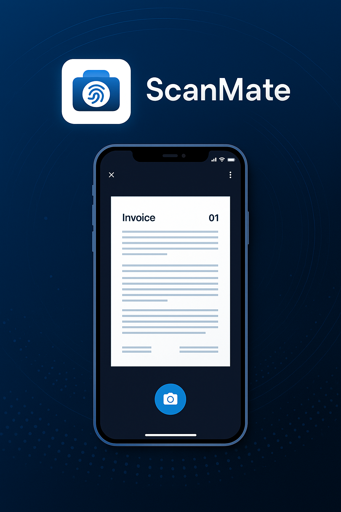

مميزات الجهاز

- ✅ مسح الفواتير والإيصالات خلال 3 ثواني فقط
- ✅ يتصل بتطبيق على الهاتف لإدارة الملفات
- ✅ بحجم الجيب - سهل الحمل
- ✅ دعم PDF وتحويل النصوص (OCR)
- ✅ بطارية تدوم 7 أيام
ماذا يقول عملاؤنا؟
"وفّر عليّ أيام من تنظيم الفواتير... جهاز عبقري!" – محمد سمير
"سهل الاستخدام جدًا وساعدني أرتب حسابات شركتي الصغيرة." – سارة عبد الله
الأسئلة الشائعة
- هل يعمل على جميع الأجهزة؟
- نعم، يوجد تطبيق للأندرويد والآيفون.
- هل يحتاج إنترنت للعمل؟
- لا، يعمل أوفلاين ويرفع الملفات عند الاتصال بالنت.
- هل يوجد ضمان؟
- نعم، ضمان سنة كاملة ضد عيوب الصناعة.
اطلب جهازك الآن
املأ بياناتك للحصول على خصم 20%: